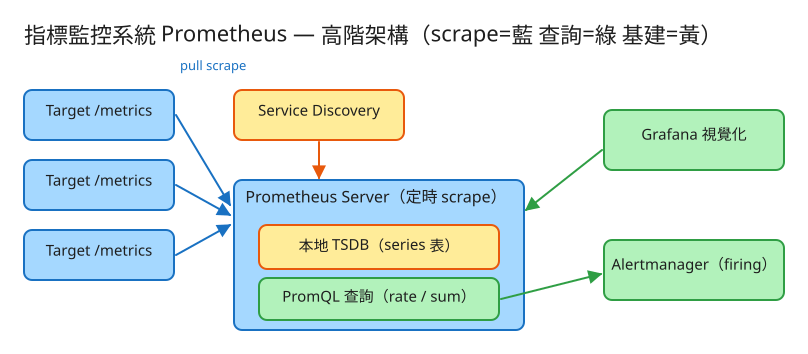

J 可觀測性 建議 42 分鐘 Design a Metrics & Monitoring System (Prometheus)
/metrics（Prometheus 曝露格式），系統定時拉取。http_requests_total{method="GET",code="200"}，可依任意 label 切片聚合。rate()/increase()、sum/avg by(label) 聚合。for 一段時間後觸發。| 指標 | 假設 | 推算 |
|---|---|---|
| active series 數（基數） | 1 萬 target × 每台 100 series | ~100 萬 active series |
| scrape 間隔 | 每 15 秒拉一次 | 樣本率 ≈ 100萬 / 15 ≈ 6.7 萬 samples/s |
| 單樣本儲存 | delta 壓縮後 ~1.5~2 bytes/sample | 未壓縮 16B（8B 時間+8B 值）→ 壓縮率 ~10× |
| 儲存（15 天保留） | 6.7萬 × 86400 × 15 × 2B | ≈ 170 GB（壓縮後本地磁碟） |
| 查詢 | Grafana 多面板每 10s 刷新 | 查詢命中近期 block / 記憶體 head，需索引加速 |
# target 暴露指標（被 scrape，曝露格式 exposition format）
GET /metrics
→ 200 text/plain
# TYPE http_requests_total counter
http_requests_total{method="GET",code="200"} 1027
# TYPE process_resident_memory_bytes gauge
process_resident_memory_bytes 5.1e7
# 餵入 / 模擬 scrape 一批樣本（本 demo）
POST /api/scrape Body: 曝露格式文字 或 application/json { "samples":[{name,labels,value,type}] }
→ 200 { "ingested": 3, "ts": 1717200000000 }
# 查詢（PromQL 簡化語法）
GET /api/query?expr=instant process_resident_memory_bytes
GET /api/query?expr=rate http_requests_total[60] # 60 秒窗每秒變化率
GET /api/query?expr=sum http_requests_total by(method) # 依 method 分組加總
# 告警狀態
GET /api/alerts → { "alerts": { "HighRequestRate": { "state":"firing", ... } } }
series（時間序列）= metric name + 一組 labels，唯一識別一條曲線
http_requests_total{method="GET",code="200"} ← 一條 series
http_requests_total{method="POST",code="200"} ← 另一條（labels 不同）
sample（樣本）= (timestamp 毫秒, float value)，append 到所屬 series
series A: (t0, 1000) (t1, 1027) (t2, 1100) ...
型別：
counter 單調遞增（總請求/總錯誤）；重啟會 reset 歸零 → rate() 必須補回
gauge 可上可下（記憶體、佇列長度、溫度）
（延伸：histogram / summary 用多條 series 表示分位數）
曝露格式（exposition format）：每行一個樣本，# TYPE 宣告型別{a="1",b="2"} 與 {b="2",a="1"} 必須對到同一條 series。實作上把 labels 依 key 排序再序列化成穩定字串當索引鍵；真實 Prometheus 用倒排索引（label→series 集合）加速「依 label 篩選」的查詢。
✏️ 用 Excalidraw 開啟編輯（diagram.excalidraw） Targets(/metrics) ──┐
Targets(/metrics) ──┤ Service Discovery（k8s/consul/檔案）
Targets(/metrics) ──┘ │ 提供 target 清單
▼
┌──────────────────────┐
│ Prometheus Server │ 定時 scrape（pull, 藍）
│ ┌────────────────┐ │
│ │ 本地 TSDB │ │ series 表 + WAL + block
│ └────────────────┘ │
│ PromQL 引擎(rate/sum) │ ← 查詢（綠）
└──────────┬────────────┘
告警規則評估 │
▼
Alertmanager（去重/分組/靜默/路由 → Slack/PagerDuty）
Grafana ──查詢──▶ Prometheus（視覺化儀表板）/metrics，打上 scrape 時間戳，寫入本地 TSDB。up 指標）、易於本機測試（直接 curl /metrics）。rate(counter[5m]) = 窗內（最後值 − 第一值）/ 時間差，得「每秒平均增速」。rate() 真實實作了這個補償。sum by(label)：跨多條 series 取最新值加總，可依某 label 分組（如 sum by(code)(rate(...)) 看各狀態碼速率）。expr 成立後不立即告警，先進 pending；持續成立達 for 時長才升為 firing（過濾瞬時抖動，降低噪音）。inactive → pending → firing → resolved。| 階段 | 瓶頸 | 對策 |
|---|---|---|
| 單機記憶體 | active series 太多（高基數） | 限制 label 基數、relabel 丟棄高基數 series、metric_relabel_configs |
| 單機抓不完 | target 數超過單 Prometheus 負荷 | 水平分片：多台 Prometheus 各抓一部分 target（依 hash/標籤分配） |
| 跨叢集彙總 | 要全域視圖 | 聯邦 federation：上層 Prometheus scrape 下層的彙總指標（只抓聚合後少量 series） |
| 長期保留 | 本地磁碟只留 15 天 | remote write 到遠端儲存（Thanos / Cortex / Mimir / VictoriaMetrics），長期 + 全域查詢 |
| 查詢爆量 | 大範圍 range query 慢 | recording rules 預先算好常用聚合，存成新 series |
up）、易除錯、target 解耦；push 適合短命任務與防火牆穿透。Prometheus 選 pull，短命任務用 Pushgateway 補。for 抑制抖動 + Alertmanager 分組/去重/抑制。如何看「服務有沒有在」？→ up == 0。本題 demo 用 PHP 內建伺服器把 TSDB 核心邏輯做成真實可跑：
src/Tsdb.php series 識別（name+排序 labels 序列化）、scrape 解析曝露格式、append 樣本、instant/rate（含 counter reset 補償）/sumBy、告警狀態機（inactive→pending→firing→resolved），以 flock 持久化到 JSON。public/index.php 路由 POST /api/scrape、GET /metrics、GET /api/query?expr=、GET /api/alerts，並附測試頁。# 啟動
cd demo
php -S localhost:8027 -t public
# 瀏覽器開 http://localhost:8027：按幾次 Scrape（counter 值逐次調大）→ 跑 rate/sum → 看告警 firing/metrics 當作一個 exporter target 設進 scrape_configs 即可。